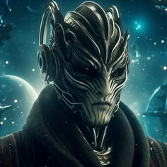
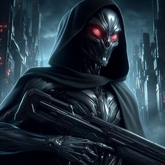
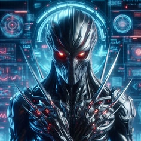
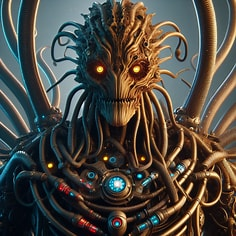
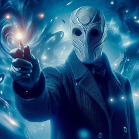
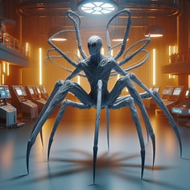

Create a science fiction villain, it does not need to be in human form

Create a science fiction villian like a creature with a sleek, metallic exoskeleton, glowing red eyes, and tentacle-like appendages that can manipulate both technology and the minds of those it encounters.

Create a science fiction villian with a dark, armored carapace, multiple glowing eyes that pierce through the shadows, and sharp, mechanical limbs that can morph into various tools for manipulation and combat.

Create a science fiction villian like a non-humanoid, featuring multiple tentacles, an asymmetrical body, and glowing eyes to evoke a sense of otherworldliness

Create a science fiction villian a non-humanoid, faceless entity that exudes an aura of mystery and menace

Create a science fiction villian like a non-humanoid spider like faceless entity